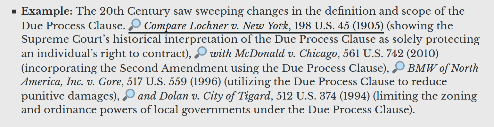
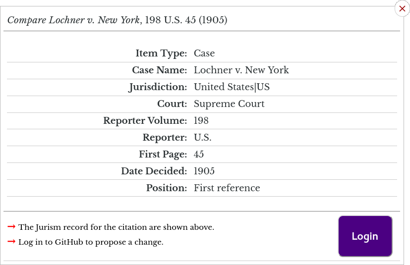
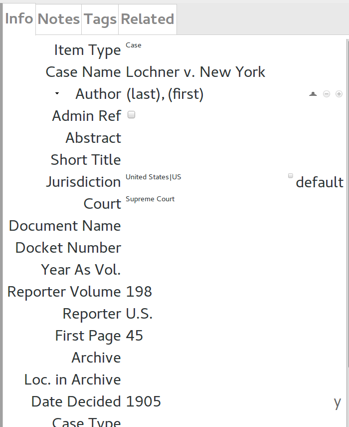
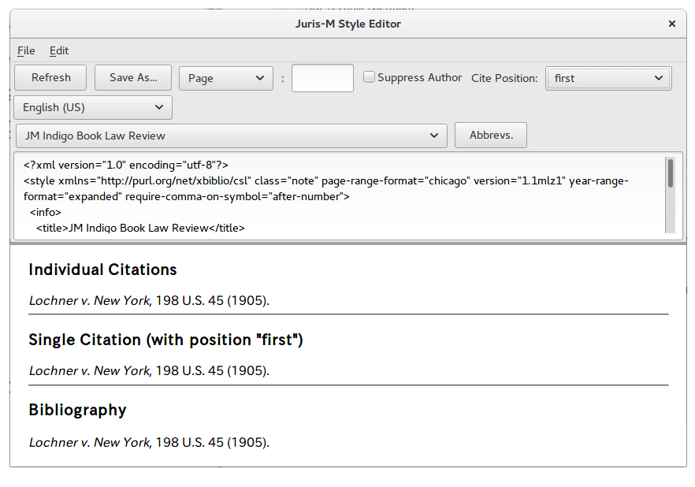

Using Jurism with the Indigo Book
Using Jurism with the Indigo Book
The month of July ushered in something old and something new for writers on the law. For the former, we are pleased to see the release of another edition of venerable The Bluebook, now within reach of its centenary year.[1] For the latter, after much waiting and somewhat less anticipation,[2] we welcome the full automation of the Indigo Book[3] in the Jurism reference manager.[4] Tight integration of Jurism and the Indigo Book text offers authors unrivalled convenience, with detailed user guidance on data entry, and features that Jurism inherits from its well-established “upstream parent” Zotero: point-and-click insertion of accurate references in Word, LibreOffice, and Google Docs, robust support for collaboration, and much more.
This post covers the basic steps for getting started with Jurism’s new “JM Indigo Book” and “JM Indigo Book Law Review” styles. (The discussion assumes that you have installed the Jurism client and a browser connector for Google Chrome or Firefox, and that you have configured the Word or LibreOffice integration plugins.)
Data Entry Guidance
The Indigo Book copy hosted on the Jurism project site contains example citations marked with a magnifying glass:

Clicking on a link opens a popup with the citation at the top, a list of fields and values in the middle, and an inviting Login button at the bottom:

The displayed values are those that were entered into Jurism (in the public Jurism Style Test Items library) for this item. When synced to the Jurism client, the entry looks like this:

“What is cool about that?” you may ask. Well, the Bluebook rules are “uniform” only in the sense that they are written down: they specify dozens of citation patterns for legal cases, and the situation with regulations and statutes is only slightly better. Jurism identifies the citation pattern to apply based on which fields are used, and in some cases which are left empty.[5] Correct data entry is therefore essential, and the popups give the precise guidance that is required for each citation form.
Automated Citations
Style editor
The Style Editor embedded in Jurism is a convenient tool for quickly checking the citation produced by an item. To open the editor, select an item in the center pane, open Preferences, select the Cite tab, and click on the Style Editor button. In the editor, select the “JM Indigo Book” or “JM Indigo Book Law Review” style, and the citation will be displayed:

Word processors
Jurism supports insertion of references into three word processing systems: Word (Windows and Mac), LibreOffice, and Google Docs. In-document citations are dynamic, the convenience of which is easier to illustrate than to explain. Rolling the cursor over the image below will run a short screencast of the following operations:[6]
- Selecting a citation style;
- Entering a citation with a signal selected by typing ctrl-C in the Prefix field;
- Entering a subsequent reference to the same source;
- Entering a case citation with subsequent history, typing a signal directly into the Prefix field;
- Entering a citation composed of two unrelated references, adjusting the order of items in the citation widget after entry.
- A cut-and-paste edit of the text, followed by a citation refresh to adjust citations to their new context.

The video is somewhat blurred, but if you watch closely you may notice a difference between the two composite citations:
- West, supra note 1; Lochner, 198 U.S. 45.
- Lochner v. New York, 198 U.S. 45 (1905), overruled by West Coast Hotel Co. v. Parrish, 300 U.S. 379 (1937).
The first pair is joined with a semicolon, and the second with a comma. The difference is important: a comma join signals that the references form a related series. Relations between items are part of the permanent record in the Jurism library, Here is a quick illustration of how to set them up:
This brief introduction has shown how the integration of the Indigo Book and Jurism can ease one of the persistent bottlenecks in the legal writing process. There is much more to the story (what is behind that Login button anyway?), which we leave as a topic for future posts.
The Bluebook: A Uniform System of Citation (Columbia Law Review Ass’n et al. eds., 21st ed. 2020). ↩︎
See, e.g., Stephen M. Darrow & Jonathan J. Darrow, Beating the Bluebook Blues: A Response to Judge Posner, 109 Mich. L. Rev. 92 (2011), suggesting that:
[T]he Stanford Center for Computers and Law … or some other such high-prestige venture, may wish to take up the banner of moving our system of legal citation into a new age of efficiency …
… a challenge taken up individually by the current author, as a graduate of U.C. Berkeley and UCLA, and as staff of Nagoya University by way of the School of Oriental and African Studies, University of London. Prestigious institutions all. ↩︎
Sprigman et al., The Indigo Book: A Manual of Legal Citation (Public Resource, 2016). ↩︎
Frank Bennett, Jurism, v. 5.0.89m11 (Jul. 2020), https://juris-m.github.io. ↩︎
As a striking example, the various “vendor-neutral” citation forms used in a dozen or so US jurisdictions are generated automatically from entries that carry only the case name, jurisdiction, court, judgment number, year-as-volume, and date of decision. ↩︎
The opening sequence is from the Stock Footage collection by
pilotsflying, at https://www.videvo.net/profile/pilotsflying. ↩︎